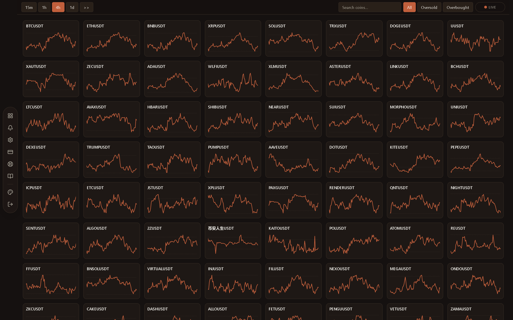
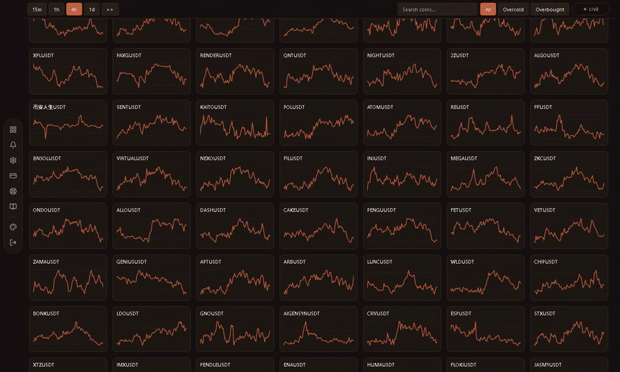
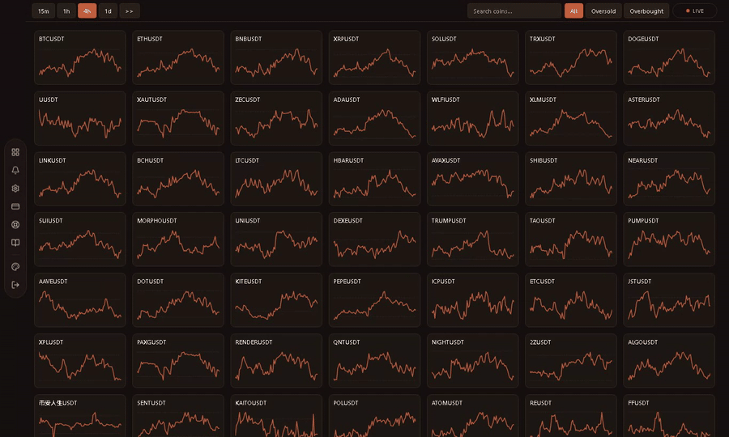
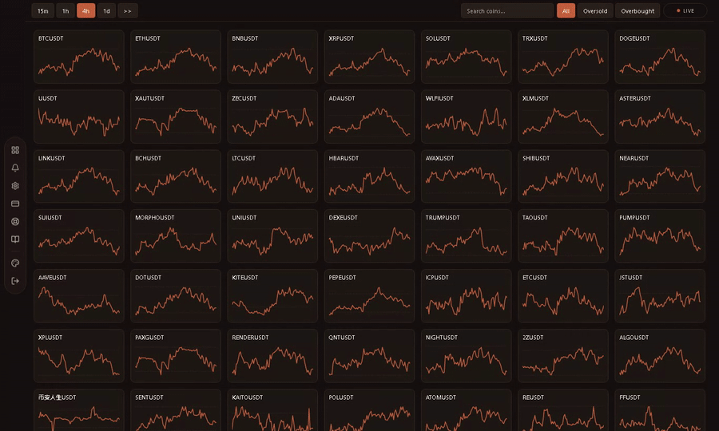
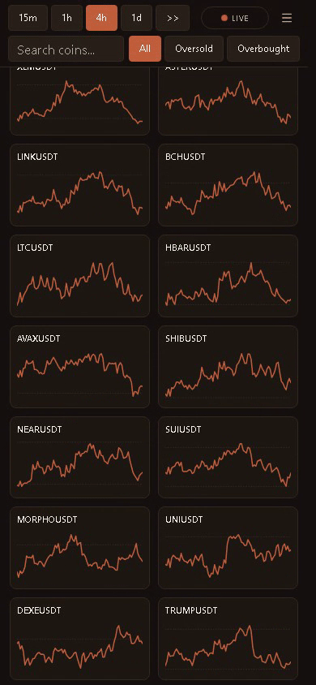

The whole crypto market. One RSI wall.
A logged-in SaaS scanner for Binance spot pairs: live RSI tiles, timeframe switching, symbol search, chart drawings, and a mobile-ready PWA surface.

Scroll the scanner like a trading terminal.
The grid stays dense on purpose: every tile is a symbol, every line is RSI movement, and the trader can scan dozens of pairs without opening another page.

Move through market context fast.
Timeframes are one tap away. Oversold and overbought filters dim the noise so the extreme setups surface immediately.


Type a ticker. Open the setup.
Search is not just filtering text. Pressing enter opens the best matching coin straight into the full RSI chart workflow.
Draw directly on the RSI pane.
The chart modal includes zoom, pan, trendlines, color selection, undo, redo, clear, and PNG export so a trader can mark and save a setup.


The same grid in your hand.
The tool compresses into a phone layout with timeframe controls, search, live status, filters, and a two-column market grid.
One market engine feeds every screen.
Browsers do not hit Binance for every tile. The server computes and keeps RSI snapshots warm, then the UI reads compact market state.